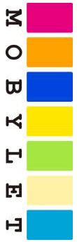

機能リファレンス
mobyletは携帯Webアプリケーション構築用のフレームワークです。
携帯でWebアプリケーションを構築する際に課題となるキャリア・機種毎の差異を吸収し、
効率的な携帯Webアプリケーションの構築を支援します。
キャリアの識別
mobyletでは、アクセス端末のキャリア情報を取得する機能を提供しています。
Mobylet mobylet = MobyletFactory.getInstance(); Carrier carrier = mobylet.getCarrier();
画面表示サイズの取得
mobyletでは、アクセス端末の画面表示サイズを取得する機能を提供しています。
画面表示サイズを取得するには、次のように記述します。
obylet mobylet = MobyletFactory.getInstance(); Device device = mobylet.getDevice(); DeviceDisplay deviceDisplay = device.getDeviceDisplay(); deviceDisplay.getWidth(); //幅取得 deviceDisplay.getHeight(); //高さ取得
GPS対応機種の識別
mobyletでは、GPS対応機種を識別する機能を提供しています。
GPS対応機種を識別するには、次のように記述します。
Mobylet mobylet = MobyletFactory.getInstance(); Device device = mobylet.getDevice(); device.hasGps();
GPS情報の取得
mobyletでは、キャリア毎のGPS情報取得用アンカーを自動生成する機能を提供しています。
GPS情報取得用アンカーを生成するには、次のように記述します。
<m:gps kickBackUrl="http://localhost:8080/mobylet-example/gps.jsp"> 位置情報(GPS) </m:gps>
kickBackUrlにキャリアからリダイレクトを受け付けるURLを記述します。
リダイレクトを受け付けたページでGPS情報を取得する場合、次のように記述します。
Gps gps = MobyletFactory.getInstance().getGps(); gps.getLat(); //緯度情報 gps.getLon(); //経度情報
座標の測地系を変換する場合、次のように記述します。
GeoConverter converter = SingletonUtils.get(GeoConverter.class); converter.toTokyo(gps); //日本測地系に変換 converter.toWgs84(gps); //世界測地系に変換
座標移動Gps情報の取得
mobyletでは、緯度・経度に距離を加減して移動後の座標情報を取得する機能を提供しています。
移動後の座標情報を取得するには、次のように記述します。
Gps gps = MobyletFactory.getInstance().getGps(); Gps gpsTop = GpsUtils.getMovedGps(gps, 0.0, 2000.0);//2000m北に移動 Gps gpsBottom = GpsUtils.getMovedGps(gps, 0.0, -2000.0);//2000m南に移動 Gps gpsRight = GpsUtils.getMovedGps(gps, 2000.0, 0.0);//2000m東に移動 Gps gpsLeft = GpsUtils.getMovedGps(gps, -2000.0, 0.0);//2000m西に移動
GoogleMapの表示
mobyletでは、GoogleMapを簡単に利用する機能を提供しています。
GoogleAPIのキーをGoogleMapsAPIのサイトから取得して、
キャリアからのリダイレクトを受け付けるページに次のように記述するだけで、
現在地を表示するGoogleMapが表示されます。
<m:googlemap key="ABQIAAAAPYgXdQyUkL002WfUhRqsFxSCNA_NVtbBIrIBbfef5W7r3469 (改行なし) IRSmYo0djw2uXw79MXwwZacmUqYReQ"> </m:googlemap>
※keyの値は取得したGoogleAPIキーに変更してください
GoogleMapsAPIで指定可能なパラメーターは全て属性として記述できます。
マーカーを複数指定する場合は、次のようにmarkerタグをgooglemapタグの中に記述してください。
<m:googlemap key="ABQIAAAAPYgXdQyUkL002WfUhRqsFxSCNA_NVtbBIrIBbfef5W7r3469 (改行なし) IRSmYo0djw2uXw79MXwwZacmUqYReQ"> <m:marker lat="36.6223" lon="138.5972"/> <m:marker lat="36.6258" lon="138.5823"/> </m:googlemap>
絵文字の表示
mobyletでは、キャリア毎の絵文字を自動で変換して表示する機能を提供しています。
絵文字を記述する場合、どのキャリアのどの絵文字を基点とするかを指定しておくと、
実際にアクセスされたキャリアを自動的に識別して対応する絵文字を表示します。
次の例ではDocomoの「晴れ」の絵文字を基点に指定しています。
<m:emoji name="晴れ" carrier="DOCOMO"/>
実際の表示は、アクセス端末のキャリアにより次のようになります。
- Docomo
-

- Au
- Softbank
画像のリサイズ
mobyletでは、ブラウザの横幅に合わせて画像をリサイズする機能を提供しています。
デフォルトでアプリケーション内の画像に対してはリサイズ機能が有効になりますが、
外部サイトなど任意の位置の画像を使用する場合は、「画像リサイズの設定」の内容に沿って設定してください。
リサイズは以下の3種類のタイプを指定できます。
- FITWIDTH ・・・ 縦横比率を保ち画像を縮小します。
- CLIPSQUARE ・・・ 横幅を基準とした正方形に縮小し、はみ出る部分をくり抜いた画像に変換します。
- INSQUARE ・・・ 横幅を基準とした正方形に収まるサイズに画像全体を縮小します。
サイズの指定は、magniWidthで横幅をブラウザ幅との比率で指定するのが基本となります。
次の例では横長の画像を、ブラウザ幅の20%にリサイズ指定しています。
<m:img src="./images/resize.jpg" magniWidth="0.2"/> <m:img src="./images/resize.jpg" magniWidth="0.2" scaleType="CLIPSQUARE"/> <m:img src="./images/resize.jpg" magniWidth="0.2" scaleType="INSQUARE"/>
実際の表示は、次のようになります。
- FITWIDTH
-

- CLIPSQUARE
- INSQUARE
縦長の画像をリサイズ指定した場合は次のようになります。
<m:img src="./images/resizeV.jpg" magniWidth="0.2"/> <m:img src="./images/resizeV.jpg" magniWidth="0.2" scaleType="CLIPSQUARE"/> <m:img src="./images/resizeV.jpg" magniWidth="0.2" scaleType="INSQUARE"/>
- 
- FITWIDTH
- CLIPSQUARE
-

- INSQUARE
※Seasar2連携時、HotDeploy環境下では同ホスト同アプリケーションへのhttp経由での画像パス指定はできません。
HotDeploy環境下での同ホスト同アプリケーション内への画像のパスは
<m:img src="http://localhost:8080/mobylet-example/img/image.gif" magniWidth="0.9"/>
のようにhttpから記述するのではなく、
mobylet.image.propertiesでimage.local.base.dirに設定したディレクトリ以降のパスを
<m:img src="image.gif" magniWidth="0.9"/>
のように記述してください。
半角変換
mobyletでは、全角文字を半角文字に変換する機能を提供しています。
変換対象となるのは次の文字種です。
- 大文字・小文字のアルファベット
- 数字
- カタカナ
- 「／」「－」「ー」「‐」「゛」「゜」「・」
上記の文字を半角変換する場合、次のように記述します。
<m:out value="Ａｌｐｈａｂｅｔと１とカタカナと「／」「－」「ー」「‐」「゛」「゜」「・」を変換します。"/>
実際の表示は
「Alphabetと1とｶﾀｶﾅと「/」「-」「-」「-」「ﾞ」「ﾟ」「･」を変換します。」
のように、対象文字が半角変換されて表示されます。